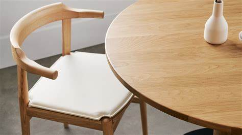

Sundays

Sundays Furniture first entered the market in 2019, a direct-to-consumer home goods shop offering high-quality, timeless pieces at an attainable price point. With a goal of creating a furniture shopping experience that is “relaxed, easy, and full of good vibes — just like a Sunday morning,” co-founder Barbora Samieian along with three close friends managed to do just that.
To take some of the overwhelm out of furniture shopping, Sundays offers free delivery on all items within Canada plus free assembly of all large items in your home — a service often offered with a hefty price tag. Each item comes with a two-year warranty and the option to see, feel and sit at the company’s showrooms in Vancouver, Toronto, and most recently, Calgary.
We spoke with Samieian about Sundays’ conception, her favourite pieces, the brand’s commitment to slow furniture and their expansion into the U.S.